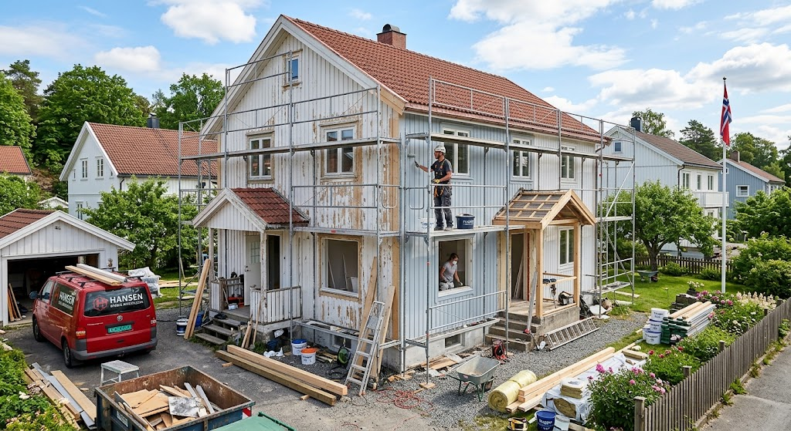

Å pusse opp boligen er en spennende prosess som både øker trivselen og verdien på hjemmet ditt.
Enten du skal fornye et enkelt rom, modernisere kjøkkenet, eller gjennomføre en totalrenovering,
er et godt grunnarbeid avgjørende for et vellykket resultat.
For å sikre at prosjektet går så smidig som mulig, er det noen viktige steg du bør huske på:
God planlegging: Start med å kartlegge behovene.
Finn ut nøyaktig hva som skal gjøres, saml inspirasjon,
og lag en realistisk tidsplan.
Tydelig budsjett: Få oversikt over kostnadene for både materialer og arbeidskraft tidlig.
Det anbefales alltid å inkludere en buffer på 10–15 % for uforutsette utgifter.
Bruk riktige fagfolk: Mens mye overflateoppussing kan gjøres selv, krever arbeid med rør,
våtrom og elektrisitet sertifiserte håndverkere. Dette sikrer at arbeidet er trygt,
lovlig og av høy kvalitet.